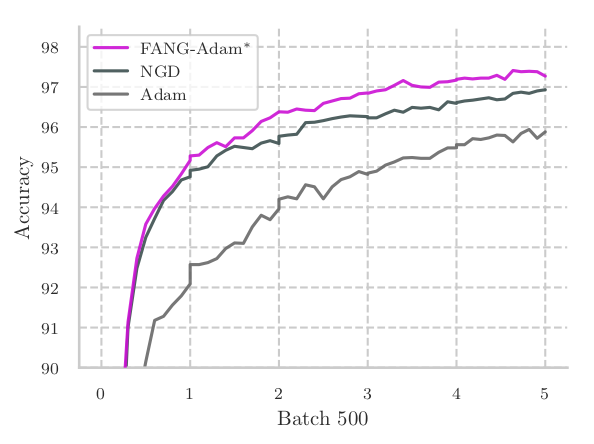
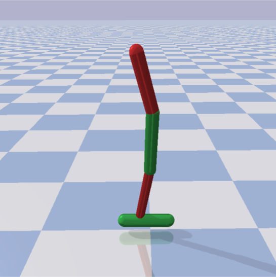
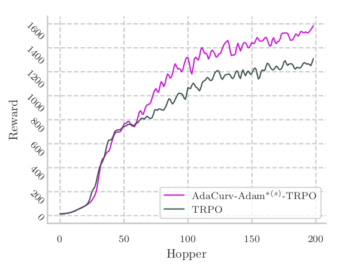
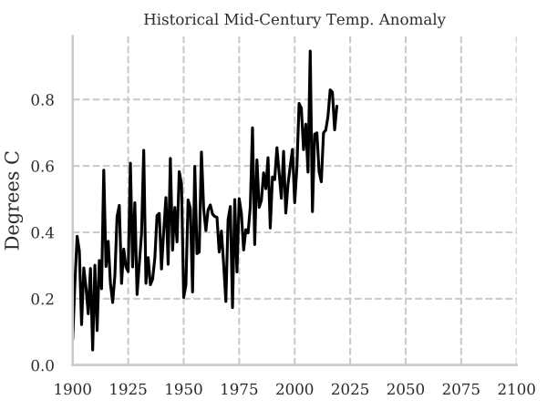
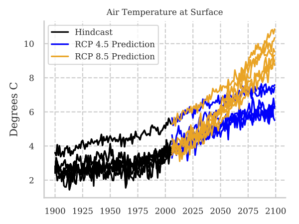
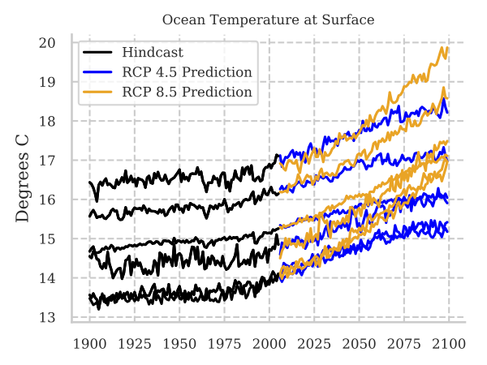

<!--
  Copyright 2018 The Distill Template Authors

  Licensed under the Apache License, Version 2.0 (the "License");
  you may not use this file except in compliance with the License.
  You may obtain a copy of the License at

       http://www.apache.org/licenses/LICENSE-2.0

  Unless required by applicable law or agreed to in writing, software
  distributed under the License is distributed on an "AS IS" BASIS,
  WITHOUT WARRANTIES OR CONDITIONS OF ANY KIND, either express or implied.
  See the License for the specific language governing permissions and
  limitations under the License.
-->
<!doctype html>
<title>AdaCurv</title>

<meta charset="utf-8">
<script src="js/template.v1.js"></script>
<!-- <script src="https://tpbarron.github.io/js/template.v1.js"></script> -->
<script src='https://cdnjs.cloudflare.com/ajax/libs/mathjax/2.7.5/MathJax.js?config=TeX-MML-AM_CHTML' async></script>

<dt-article>
  <h1>AdaCurv</h1>
  <h2>Adaptive Curvature for Stochastic Optimization</h2>

  <hr>
  <h2>What is AdaCurv?</h2>
  <p>AdaCurv forms adaptive estimates of the <i>curvature matrix</i> similar to how algorithms like
     Adam or Adagrad form adaptive estimates of the <i>gradient</i>. This results in more efficient
     estimation of the curvature matrix with fewer data samples at each iteration. </p>

  <p>For those familiar with Adam, here is a high-level view of an Adam-style variant of AdaCurv.</p>

  <p>
  \begin{align*}
    g_t &= \nabla_{\theta_t} f_t \quad && \text{compute gradient of objective $f_t$}\\
    m_t &= \beta_1 m_{t-1} + (1-\beta_1) g_t \quad && \text{compute adaptive gradient with $0 < \beta_1 < 1$} \\
    B_t &= \nabla_{\theta_t}^2 f_t \quad && \text{compute curvature at time $t$}\\
    C_t &= \beta_2 C_{t-1} + (1-\beta_2) B_t \quad && \text{compute adaptive curvature $0 < \beta_2 < 1$} \\
    \theta_t &= \theta_{t-1} - \eta C^{-1} m_t \quad && \text{perform parameter update}
  \end{align*}
  </p>

  <hr>
  <h2>Getting Started</h2>
  <p>Clone the repository and add the repository to your python path:</p>

  <dt-code block language="bash">
    git clone https://github.com/tpbarron/adacurv.git
    export PYTHONPATH=$PYTHONPATH:/path/to/adacurv/
  </dt-code>

  <p>If you would like to run the RL experiments additional paths must be set:</p>
  <dt-code block language="bash">
    export PYTHONPATH=$PYTHONPATH:/path/to/adacurv/experiments/mjrl/    # for the PyBullet RL experiments
    export PYTHONPATH=$PYTHONPATH:/path/to/adacurv/experiments/bbbot/   # for the Basketball robot simulation.
  </dt-code>

  <p>Install the dependencies:</p>
  <dt-code block language="bash">
    pip install -r requirements.txt
  </dt-code>

  <p>At this point one may run the samples in the experiments folder. To get started right away we
    have included a <dt-code language="python">quick_start.py</dt-code> file in the
    <dt-code language="html">mnist</dt-code> and <dt-code language="html">mjrl</dt-code>
    experiment directories that run a single experiment.
    Once that has finished the data can be plotted with the corresponding
    <dt-code language="python">plot_quick_start.py</dt-code> in the same directory script.
  <p>

  <h3>Supervised Learning on MNIST</h3>
  <p>To run the MNIST example execute the following commands:</p>
  <p><dt-code block language="bash">
    cd adacurv/experiments/mnist/
    python quick_start.py
  </dt-code></p>
  <p>This will run AdaCurv-Adam*, NGD, and Adam optimizers for 5 epochs on MNIST and save data
    to <dt-code language="bash">results/mlp_mnist/quick_start</dt-code>.
    Once this has finished, running the provided plotting script
    <dt-code language="bash">python plot_quick_start.py</dt-code> will save a plot of the results to
    <dt-code languate="bash">results/mlp_mnist/quick_start/plots/</dt-code>. <br />

    
  </p>

  <h3>Reinforcement Learning with PyBullet</h3>
  <p>Similar to MNIST, there is also a 'quick start' for the RL experiments.</p>
  <p><dt-code block language="bash">
    cd adacurv/experiments/mjrl/
    python quick_start.py
  </dt-code></p>

  <p>NOTE: If running the quick start script fails ensure that the proper python paths are set and
    dependencies are installed as specified above in Getting Started.</p>

  <p></p>

  <p>This quick start script will run AdaCurv*-TRPO with shrinkage and vanilla TRPO on the Hopper RL
    environment in the PyBullet simulator. The training will run for 1 million steps.

    As before, <dt-code language="bash">python plot_quick_start.py</dt-code> will save a plot of the results to
    <dt-code languate="bash">results/quick_start/plots/</dt-code>. <br />

    
  </p>


  <h3>Matrix Completion for Modeling Natural Disaster Trends</h3>
  <p>We also provide a sample script for the matrix completion task. The sparse matrix (and its
    associated mask) is available pre-computed. To run the sample, one simply needs to execute the
    <dt-code language="bash">climate_quick_start.py</dt-code> file. This will launch matrix completion
    tasks for modeling problems based on both <a href="https://en.wikipedia.org/wiki/Representative_Concentration_Pathway">
    Representative Concentration Pathways</a> 4.5 and 8.5. The optimization for each task will run for
    50 epochs (though a better fit can be achieved with a few hundred epochs). Upon completion the associated
    plotting script (<dt-code language="bash">plot_climate.py</dt-code> can be used to view the results.
    This script will generate the plots found in the paper.

    <br />
    Plots of the original data:
    <br />
    
    
    
    <br />
    Plots of the estimated trends:
    <br />
    
    
    
    <br />


  </p>


  <hr>
  <h2>Project Structure</h2>

  <dt-code block language="html">
    adacurv/
      experiments/
        mnist/
        mjrl/
        matrix_completion/
        ...
      adacurv/
        torch/  - PyTorch implementation of AdaCurv
          optim/  - optimizer implementations
          utils/  - utilities for CG, Lanzcos, linesearch
  </dt-code>

  <hr>
  <h2>Using an AdaCurv Optimizer</h2>

  <p>The AdaCurv optimizers depend on a the ability to compute the derivative of the loss repeatedly
     (for each matrix-vector product) and thus require a loss closure to be passed. The framework
     provides several common, preimplemented loss closures in
     <dt-code language="python">adacurv/torch/optim/hvp_closures.py</dt-code>.
     For example, the MNIST experiment creates a
     <dt-code language="python">kl_closure</dt-code> at each optimization step that depends
     on the model, input and output data, and a loss function (in this case
     <dt-code language="python">mean_kl_multinomial</dt-code>
     because the Fisher is the Hessian of the KL divergence). This closure is then passed to the
     <dt-code language="python">optimizer.step</dt-code> function.
   </p>

  <dt-code block language="python">
    closure = kl_closure(model, data, target, mean_kl_multinomial)
    optimizer.step(closure)
  </dt-code>

  <p>The optimizer takes care of the rest of the optimization including the curvature-vector products
    and adaptive parameter updates behind the scenes.</p>

  <hr>
  <p>Template adapted from <a href="https://distill.pub">Distill</a> with much gratitude.</p>

</dt-article>
